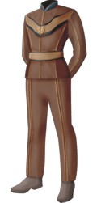
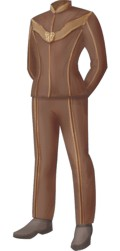
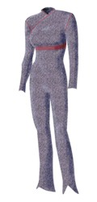
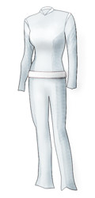
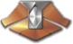

Vulcaniani |
Specie umanoide nativa del pianeta Vulcano,
tra i membri fondatori della
Federazione.
I Vulcaniani sono stati i primi alieni ad essere entrati in contatto con i
Terrestri nel 2063 a Bozeman,
Montana, gettando le basi di quella che sarebbe poi diventata la
Federazione dei Pianeti Uniti,
anche se avevano visitato la Terra in segreto
nel 1957.
I Borg hanno classificato questa razza come specie 3259
(The Raven).
La classificazione di pianeti è stata ideata dai Vulcaniani; la
classe M è una
contrazione della parola Minshara (Strange New
World).
Il liuto vulcaniano è uno strumento musicale a cinque corde basato su una scala
diatonica. Una delle canzoni che possono essere accompagnate da questo strumento
è I viaggi di Felor, una storia composta da 348 versi che parla di un
facoltoso mercante che partì per un viaggio per allargare i suoi orizzonti.
Sfidando la tempesta attraversò il mar Borot e raggiunse le spiaggie buie di
Rahal, dove la vecchia T'Para dispensava la verità. Eccone un estratto:
«He travelled through the wind swept hills,
and cross the Veran fire plains
to find the silent Monsav Kur
still unfulfilled he journeid home
told stories of the lessons learned
and gain true wisdom by the giving.» (Innocence)
Biologia
Il trellio-D agisce sui Vulcaniani come una potente neurotossina che compromette
i percorsi sinaptici utilizzati per controllare le emozioni (Impulse);
un'esposizione prolungata provoca uno stato di follia irreversibile, se
l'esposizione è limitata nel tempo, il soggetto può essere curato con una
rigenerazione sinaptica.
La frequenza delle pulsazioni tipica di un Vulcaniano è di circa 240 pulsazioni
al secondo e la pressione sanguigna media è estremamente bassa (The Naked Time).
L'equivalente dell'emoglobina umana dei Vulcaniani è basata sul rame anziché sul
ferro, la qual cosa conferisce al sangue vulcaniano una colorazione verde anziché
rossa.
Le donne vulcaniane hanno un olfatto molto sviluppato (Broken
Bow).
I Vulcaniani possono stare svegli anche per più di due settimane di fila (Muse).
La libido cresce con l'aumentare dell'età (Body and
Soul).
Il loro cuore è posizionato sul lato sinistro del
torace, a circa venti centimetri sotto l'ascella (Mudd's Women).
Gli occhi dei Vulcaniani possiedono una particolare palpebra interna che funge
da schermo contro una luce troppo intensa (Operation: Annihilate!).
Civiltà
Anticamente una specie violenta, i Vulcaniani, guidati da
Surak, nel
350 circa dopo una violenta guerra si
sono imposti una disciplina di logica ferrea e di soppressione di ogni
manifestazione emotiva dando vita ad una cultura basata su un rigoroso codice
etico che pone la logica e i pensieri razionali al di sopra delle emozioni. Un
gruppo di dissidenti, non accettando la dottrina di
Surak, ha lasciato
Vulcano per stabilirsi su
Romulus e fondare quella che è l'attuale
società romulana.
La Carta dei Diritti dei Vulcaniani è un documento che garantisce i diritti di
libertà personale di ciascun cittadino vulcaniano (The
Maquis - Part I).
I Vulcaniani ammettono il suicidio nel caso di persone anziane affette da gravi
infermità (Death Wish).
Il Rumeri, una festività pagana del passato, prevedeva che tutti i maschi e
femmine uscissero all'aperto seminudi e ricoperti di uno scivoloso grasso
di rilanico, giocando a rincorrersi (Meld).
Un detto vulcaniano recita «Siamo qui per servire» (Captive
Pursuit).
I Vulcaniani non toccano il cibo con le mani (Broken
Bow).
I Vulcaniani credono che il katra continui ad esistere anche quando il corpo
muore. La morte è il completamento di un lungo viaggio (Innocence).
Un vecchio rito, il Fullara, già in disuso nel
2152, consisteva nella
soppressione della memoria di un evento insieme alle emozioni associate ad esso
(The Seventh).
Per recuperare il controllo della propria mente, i Vulcaniani eseguono un
rituale che coinvolge il keethara. Questo rituale aiuta a meditare in solitudine
e per essere costruito occorre un equilibrio perfetto e senso dello spazio;
inoltre aiuta a focalizzare i pensieri e a perfezionare il controllo. L'aspetto
non è predefinito e di solito riflette il pensiero di chi lo edifica, quindi è
diverso per ogni persona. Si esegue il rituale citando queste parole:
«Struttura, logica, funzione, controllo. Una struttura non può reggersi senza
fondamenta. La logica è il fondamento della funzione. La funzione è l'essenza
del controllo. Io possiedo il controllo. Io possiedo il controllo» (Flashback).
Il Kolinar è una disciplina rigorosa che si prefigge la purificazione di tutte
le emozioni, per ritrovarsi in uno stato di logica totale (Star
Trek I, Flashback).
Nella cultura vulcaniana esiste la disciplina chiamata tarul-etek, molto simile
ai film horror terrestri, che usa immagini particolari per provocare paura, in
modo da capire quanto bene si riesca a sopprimere le emozioni (Horizon).
I Syrranniti sono un gruppo di
Vulcaniani radicali che si nasconde nel deserto di
Vulcano (Awakening).
Il matrimonio vulcaniano non prevede un'abitudine paragonabile alla luna di
miele (Borderland).
Melders (Fusion,
Stigma)
Un'esigua minoranza di Vulcaniani presenta la capacità di trasferirsi pensieri e
memorie tra di loro e l'abilità di condividere le emozioni; ogni membro di
questa minoranza può iniziare una fusione mentale di questo tipo e ogni
Vulcaniano può esserne vittima e chi sceglie di fondersi mentalmente con i
melders viene considerato alla loro stessa stregua. I melders nascono con queste
facoltà e, almeno fino al 2152,
sono stati considerati come un'aberrazione, dal momento che questo tipo di
comportamento è giudicato inaccettabile dalla civiltà vulcaniana. Molti melders
sono fuggiti da Vulcano a causa della
ghettizzazione e delle persecuzioni subite durante gli anni. Alcuni melders
possono contrarre la sindrome di
Pa'nar, che si trasmette tramite la fusione mentale; questa malattia viene,
quindi, considerata una sorta di marchio infamante nell'ambito della civiltà
vulcaniana.
Kir'Shara
Manufatto ritenuto mitico fino al 2154,
quando Archer, guidato dal katra di
Surak, l'ha recuperato e, aiutato da
T'Pau e T'Pol l'ha consegnato
alle autorità vulacaniane. Il Kir'Shara è un pezzo unico che contiene gli scritti di
Surak, che i
Vulcaniani hanno iniziato a studiare dal
2154, risolvendo i dilemmi su
quali fossero i veri insegnamenti di
Surak, che per anni hanno diviso i
Vulcaniani. Gli studi di questo manufatto hanno cambiato profondamente la
società vulcaniana (Daedalus). Gli scritti sono memorizzati su un sistema di proiezione olografica
(Kir'Shara).
Uniformi
| Capitano (1957) |  |
| Ufficiali (1957) |  |
| Uniforme femminile (2151) |  |
| Uniforme bianca da deserto (Marauders) |
 |
Nelle uniformi del 1957 le insegne dei gradi vengono indossate sul colletto della giacca. Sotto alla giacca dell'uniforme viene indossata una maglietta di colore beige molto chiaro (Carbon Creek).
Gradi
| Subcommander (2151) |  |
| Capitano (2151) |
 |
| Vulcaniano | Italiano | Episodio |
| arev | Vento del deserto | The Forge |
| belak-paar | Autocommiserazione | Gravity |
| fal-tor-pan | Rifusione. Tecnica che consiste nel restituire il katra al corpo cui appartiene grazie a una fusione mentale simultanea tra la persona che custodisce il katra e il corpo originario della persona a cui il katra deve essere restituito. | Star Trek III |
| fal-tor-voh | Fusione mentale atta a restituire la salute mentale alle persone vittima di un tipo di malattia neurologica simile a quella di cui Tuvok soffre alla fine del 2377. Si può applicare il fal-tor-voh solamente se la malattia viene curata ai suoi primi stadi e se chi applica una fusione sia una persona compatibile (possibilmente un parente). | Endgame - Part II |
| k'ho-nar | Sentirsi completamente esposto. | Alter Ego |
| kal-if-fee | Sfida. | Amok Time |
| kar-selan | Attività cerebrale. | Yesterday's Son |
| kahswan | Rituale di iniziazione per i giovani vulcaniani. | The Catwalk, Sarek (romanzo) |
| katra | Concetto vulcaniano di anima. | Star Trek III |
| keethara | Edificio dell'armonia. | Flashback |
| koon-ut so'lik | Proposta di matrimonio. | Blood Fever |
| koon-ut-kal-if-fee | Matrimonio o sfida. | Amok Time |
| krenath | Termine che indica la condizione di illegittimità di un figlio vulcaniano. Al contrario dell'equivalente terrestre, il krenath è considerato una persona a cui è stato fatto un torto tramite le azioni dei suoi genitori e gli viene resa giustizia in ogni modo possibile, compresa l'attribuzione di una piena posizione ufficiale in entrambe le famiglie. | Sarek (romanzo) |
| lanka-gar | Uccello predatore notturno. | Sarek (romanzo) |
| le-matya | Predatore dotato di artigli velenosi. | Yesteryear |
| mol-kom | Calma, serenità. | Shuttlepod One |
| plak-tow | Febbre del sangue. | Amok Time, Blood Fever |
| ponfo mirran | Insulto. | Broken Bow - Part I |
| reldai | Leader religioso di sesso femminile, principessa. | Sarek (romanzo) |
| senapa | Antica arma vulcaniana in ossidiana simile ad una falce e intrisa di veleno letale. | Sarek (romanzo) Yesterday's Son |
| shon-ha'lock | La morsa. La forma di eros più intensa e più pericolosa a livello psicologico: il colpo di fulmine; il rimedio è la scomposizione logica, seguita da un regime di soppressione meditativa. | Alter Ego, Gravity |
| soo-lak | Terzo incomodo. | Alter Ego |
| t'raylya ohm t'air ras | Perdonami, fratello mio! (vulcaniano antico). | The Return |
| t'san s'at | La scomposizione intellettuale degli schemi emotivi, processo vulcaniano di eliminazione delle emozioni. | Alter Ego |
| tal'oth | Rituale vulcaniano in cui un giovane deve sopravvivere quattro mesi nel deserto portando con sé solamente una lama rituale. | Displaced |
| tal-shaya | Arte marziale vulcaniana. | Sarek (romanzo) Yesterday's Son |
| tekla | Tipo di legno. | Sarek (romanzo) |
| toriatal | Antica sfida rituale, risalente ai tempi precedenti a quelli di Surak. Chi lancia la sfida, intona solennemente le seguenti parole «T'kevaidors a skelitus dunt'ryala aikriian paselitan... Toriatal». Secondo l'antica legge, lo sfidato è obbligato ad accettare (due fazioni vulcaniane in lotta tra loro, erano solite scegliere i loro campioni per rappresentarle, e accettavano la vittoria o la sconfitta sulla base dell'esito di quel singolo combattimento all'ultimo sangue). | Sarek (romanzo) |
| v'tosh ka'tur | Vulcaniani senza logica. | Fusion |
| valit | Piccola creatura capace di scavare anche attraverso il terreno più duro, adattando le sue mandibole. | Sarek (romanzo) |
| vic-toor e smursma | Lunga vita e prosperità. | Star Trek I |
| vrekasht | Esiliato, reietto. Essere dichiarato vrekasht dal proprio padre per un vulcaniano è peggio che essere diseredato. | Sarek (romanzo) |